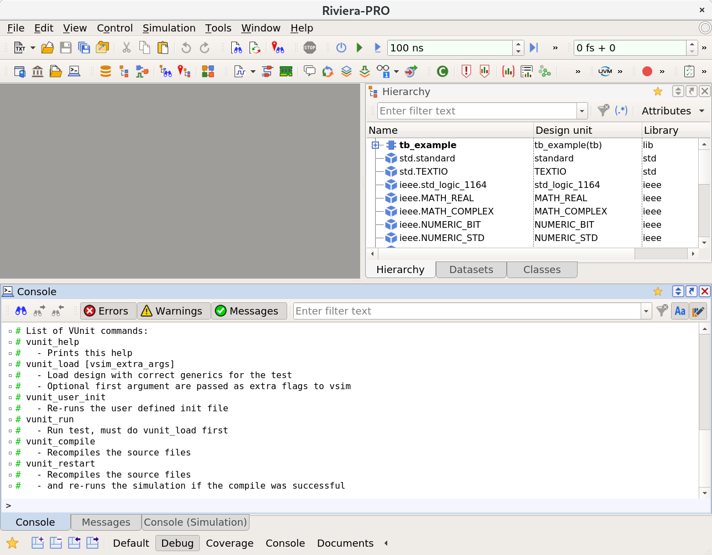

class: center, middle <img class="vunit-logo", src="vunit.svg" alt="VUnit logo"/> # VUnit Tutorial **Presenter:** Olof Kraigher <olof.kraigher@gmail.com> --- layout: true <div class="my-header"><img src="vunit.svg" /></div> <div class="my-footer"> <p>Olof Kraigher <a href="mailto:olof.kraigher@gmail.com">olof.kraigher@gmail.com</a> </p> </div> --- # Agenda 1. Introduction 2. What can VUnit do for you? 3. What is VUnit exactly? 3. VUnit basic example 4. Beyond basics 5. The libraries --- # Introduction - Provides an open source test automation tool for VHDL and SystemVerilog - Founded in 2014 by Olof Kraigher and Lars Asplund - Currently has thousands of users in major companies around the world - Active community with third party contributors - Rigorously tested using Travis CI on Linux and AppVeyor on Windows - Has a [website](https://vunit.github.io) and an active chat [channel](https://gitter.im/VUnit/vunit) --- # Introduction - **Truly** open source - Open development on GitHub publishing all internal tests and discussions - Not just publishing a read-only copy on GitHub without any tests - Has active collaboration with people making pull requests - Tries to make it easy for people to modify and contribute - Quality is a priority and contributions have to be well tested and pass code review - Helpful community - Ask a question in the chat channel and someone will usually respond the same day --- # What can VUnit do for you? - Provide a very convenient and productive edit/compile/run workflow - Automatic compile order detection and incremental re-compilation - Automate and standardize the running of all test benches - Integration with Continous Integration servers such as Jenkins and Bamboo - Provides you with a toolbox to create higher quality automated test benches - Lowers the threshold to write automated tests --- # What is VUnit exactly? VUnit is a set of related components written in Python, VHDL and SystemVerilog The core parts are: - A Python library: - Simple, documented and script-able API for end users - Test execution and results collection - Controlling and spawning of simulator processes - A VHDL/SystemVerilog Test Runner - Allows test benches with multiple named test cases - A Logging/Check Library - Provides high quality error and debug messages - Colorized output for less strain on the eyes --- # What is VUnit exactly? There are also a number of additional libraries - Dynamic Data Types Library - A push/pop anything queue - A dynamic array with up to 3 dimensions - Message Passing library - Pass dynamic messages between processes - Is the basis of verification components - Verification Component Library - AXI-stream, AXI4, AXI4-lite - Avalon - Wishbone - ... and many more --- # VUnit basic example **tb_example.vhd** ```vhdl library vunit_lib; context vunit_lib.vunit_context; entity tb_example is generic (runner_cfg : string); end entity; architecture tb of tb_example is begin main : process begin test_runner_setup(runner, runner_cfg); report "Hello world!"; test_runner_cleanup(runner); -- Simulation ends here end process; end architecture; ``` --- # VUnit basic example **run.py** ```python from vunit import VUnit prj = VUnit.from_argv() lib = prj.add_library("lib") lib.add_source_files("PROJECT_ROOT/*.vhd")) prj.main() ``` --- # VUnit basic example **Console** <pre class="hljs remark-code"> <font color="black"><b>></b></font> python run.py Compiling into lib: examples/vhdl/user_guide/tb_example.vhd <font color="#98C379"><b>passed</b></font> <font color="#98C379"><b>Compile passed</b></font> Starting lib.tb_example.all Output file: vunit_out/test_output/lib.tb_example.all/output.txt <font color="#98C379"><b>pass</b></font> (P=1 S=0 F=0 T=1) lib.tb_example.all (0.4 seconds) ==== Summary ============================== <font color="#98C379"><b>pass</b></font> lib.tb_example.all (0.4 seconds) =========================================== <font color="#98C379"><b>pass</b></font> 1 of 1 =========================================== Total time was 0.4 seconds Elapsed time was 0.4 seconds =========================================== <font color="#98C379"><b>All passed!</b></font> </pre> --- # VUnit basic example - making it fail **tb_example.vhd** ```vhdl library vunit_lib; context vunit_lib.vunit_context; entity tb_example is generic (runner_cfg : string); end entity; architecture tb of tb_example is begin main : process begin test_runner_setup(runner, runner_cfg); assert false report "Fail"; test_runner_cleanup(runner); -- Simulation ends here end process; end architecture; ``` --- # VUnit basic example - making it fail **Console** <pre class="hljs remark-code"><font color="black"><b>></b></font> python run.py Compiling into lib: examples/vhdl/user_guide/tb_example.vhd <font color="#98C379"><b>passed</b></font> <font color="#98C379"><b>Compile passed</b></font> Starting lib.tb_example.all Output file: vunit_out/test_output/lib.tb_example.all/output.text tb_example.vhd:19:5:@0ms:(assertion error): Fail error: assertion failed from: process lib.tb_example(tb).main at tb_example.vhd:13 error: simulation failed <font color="#E06C75"><b>fail</b></font> (P=0 S=0 F=1 T=1) lib.tb_example.all (0.3 seconds) ==== Summary ============================== <font color="#E06C75"><b>fail</b></font> lib.tb_example.all (0.3 seconds) =========================================== <font color="#98C379"><b>pass</b></font> 0 of 1 <font color="#E06C75"><b>fail</b></font> 1 of 1 =========================================== Total time was 0.3 seconds Elapsed time was 0.3 seconds =========================================== <font color="#E06C75"><b>Some failed!</b></font> </pre> --- # Multiple test cases VUnit supports having several test cases in a test bench **tb_example_many.vhd** ```vhdl main : process begin test_runner_setup(runner, runner_cfg); while test_suite loop if run("test_pass") then report "This will pass"; elsif run("test_fail") then assert false report "It fails"; end if; end loop; test_runner_cleanup(runner); end process; ``` --- # Multiple test cases **Console** <pre class="hljs remark-code"><font color="black"><b>></b></font> python run.py --quiet Re-compile not needed Starting lib.tb_example_many.test_pass Output file: vunit_out/test_output/lib.tb_example_many.test_pass/output.txt <font color="#98C379"><b>pass</b></font> (P=1 S=0 F=0 T=2) lib.tb_example_many.test_pass (0.4 seconds) Starting lib.tb_example_many.test_fail Output file: vunit_out/test_output/lib.tb_example_many.test_fail/output.txt <font color="#E06C75"><b>fail</b></font> (P=1 S=0 F=1 T=2) lib.tb_example_many.test_fail (0.4 seconds) ==== Summary ========================================= <font color="#98C379"><b>pass</b></font> lib.tb_example_many.test_pass (0.4 seconds) <font color="#E06C75"><b>fail</b></font> lib.tb_example_many.test_fail (0.4 seconds) ====================================================== <font color="#98C379"><b>pass</b></font> 1 of 2 <font color="#E06C75"><b>fail</b></font> 1 of 2 ====================================================== Total time was 0.7 seconds Elapsed time was 0.7 seconds ====================================================== <font color="#E06C75"><b>Some failed!</b></font> </pre> --- # Launching the Simulator GUI Sometimes you want to use the simulator GUI to investigate why your test is <font color="#E06C75"><b>failing</b></font> <pre class="hljs remark-code"><font color="black"><b>></b></font> python run.py lib.tb_example.all --gui & </pre> --- # Launching the Simulator GUI  --- # System Verilog **tb_example.sv** ```verilog `include "vunit_defines.svh" module tb_example; `TEST_SUITE begin `TEST_CASE("Test case") begin $display("Hello world"); end end; endmodule ``` --- # More examples The previous example and many more can be found on GitHub <https://github.com/VUnit/vunit/tree/master/examples> --- # Beyond basics I will give an overview of some important advanced features - Test runner watchdog - Test configuration - Simulation and compile options - The output path - Pre- and post simulation hooks - Parallel simulation - Attributes - Running several test in the same simulation - CI-server integration --- # Test runner watchdog Often a faulty DUT or test bench run forever. It thus good practice to add a timeout ```vhdl test_runner : process begin test_runner_setup(runner, runner_cfg); while test_suite loop if run("Test that stalls") then -- The watchdog will fail this test in a reasonable time wait; elsif run("Test that needs longer timeout") then -- It is also possible to set/re-set the timeout -- when test cases need separate timeout settings set_timeout(runner, 2 ms); wait for 1 ms; end if; end loop; test_runner_cleanup(runner); end process; test_runner_watchdog(runner, 1 ns); ``` --- # Test configuration - For complex test benches or when developing re-usable IP blocks you may want to test them for several combination of generics - VUnit supports running a test case several times with different configurations of generics **run.py** ```python # Use the API to get the test bench object tb_generic = lib.test_bench("tb_generic") # Test the cross product of data width and mode settings for data_width in [8, 16, 32]: for mode in ["a", "b"]: # Each configuration needs an unique name name = "dw=%i,mode=%s" % (data_width, mode) # Create the generics as a key-value map generics = dict(data_width=data_width, mode=mode) # Add the configuration tb_generic.add_config(name, generics) ``` --- # Test configuration <pre class="hljs remark-code"><font color="black"><b>></b></font> python run.py --list lib.tb_generic.dw=8,mode=a.Test 1 lib.tb_generic.dw=8,mode=b.Test 1 lib.tb_generic.dw=16,mode=a.Test 1 lib.tb_generic.dw=16,mode=b.Test 1 lib.tb_generic.dw=32,mode=a.Test 1 lib.tb_generic.dw=32,mode=b.Test 1 lib.tb_generic.dw=8,mode=a.Test 2 lib.tb_generic.dw=8,mode=b.Test 2 lib.tb_generic.dw=16,mode=a.Test 2 lib.tb_generic.dw=16,mode=b.Test 2 lib.tb_generic.dw=32,mode=a.Test 2 lib.tb_generic.dw=32,mode=b.Test 2 Listed 12 tests </pre> Configurations can be created both at test bench or test case granularity --- # Simulation and compile options - VUnit supports transparently passing options to the simulator - Compile options are set on the file level - Simulation options are set on the test bench/configuration level **run.py** ```python # Riviera specific flags lib.set_compile_option("rivierapro.vcom_flags", ["-coverage", "bs"]) lib.set_compile_option("rivierapro.vlog_flags", ["-coverage", "bs"]) # ModelSim specific flags lib.set_compile_option("modelsim.vcom_flags", ["+cover=bs"]) lib.set_compile_option("modelsim.vlog_flags", ["+cover=bs"]) # General purpose flag to enable coverage collection lib.set_sim_option("enable_coverage", True) ``` --- # The output path - VUnit creates an unique output path folder for each test case - The output path can be used to write output data from the test bench - The output path is also accessible by the `post_check` Python function - VUnit also writes the full stdout of the test to `output.txt` within the output path ```vhdl -- The output path is given by calling a function on runner_cfg report output_path(runner_cfg); ``` --- # Pre- and post simulation hooks - **pre_config**: When you want to generate stimuli before simulation - **post_check**: When you want to check result data after simulation - The `output_path` can be used as an input/output folder ```python def pre_config(output_path): generate_stimuli(join(output_path, "stimuli.csv")) return True def post_check(output_path): check_result(join(output_path, "result.csv")) return True test_bench.set_pre_config(pre_config) test_bench.set_post_check(post_check) ``` Each test bench or test configuration can have its own `pre_config` and `post_check` function --- # Parallel simulation - You can use the `-pN/--num-threads=N` flag to run `N` simulator processes in parallel - **Warning**: Your co-workers might not appreciate high `N` if you are using a commercial simulator with limited number of licenses --- # Attributes - Custom user attributes can be set on test cases via comments - Attributes be used for requirements trace-ability - Attributes for the entire project are exported to JSON using the `--export-json` flag - Attributes can also be used to mark test that take really long to run such that the CI-server only runs them at night and not on every commit - Test can be selected based using the `--{with,without}-attributes` command line argument ```vhdl if run("Test case") then -- vunit: .req-111 elsif run("Long test case") then -- vunit: .nigthly end if; ``` --- # Running several test in the same simulation - By default VUnit runs each test case within a test bench in an independent simulation - To provide isolation - To provide opportunity for parallelization - When unit-testing packages that have many small tests and little shared state that can cause problems it can be faster to run all tests in the same simulation to avoid simulator start-up overhead Use the `run_all_in_same_sim` attribute in the test bench ```vhdl -- vunit: run_all_in_same_sim entity tb_package is ... ``` Tests will still have separate status report but all test will share output path and configuration --- # CI-server integration - Use the `--xunit-xml` command line argument to write a test report file using the standard xml format that Jenkins and others support - You can also use the `--exit-0` command line argument to only set failing exit code if VUnit crashes and not just because a test failed - This can be used to get a yellow build on test failure and red build on test environment failure <pre class="hljs remark-code"><font color="black"><b>></b></font> python run.py --xunit-xml=test_results.xml ... </pre> --- # The libraries I will give an overview of the VHDL libraries included in VUnit - Logging - Check - Data Types - Communication - Verification Components --- # Logging - Write messages to stdout or file - Messages have a source and a log level - Sources can be hierarchical, separated by `:` - Simulation can be configured to stop after `N` log messages of specific level - The default is to stop directly on any `ERROR` or `FAILURE` - Logging also be mocked to enable negative testing of verification components and packages <pre class="hljs remark-code"> <font color="#56B6C2">0 ns</font> - <b>tb:monitor</b> - <font color="#C678DD"><b>TRACE</b></font> - Trace message <font color="#56B6C2">2 ns</font> - <b>tb:monitor</b> - <font color="#56B6C2"><b>DEBUG</b></font> - Debug message <font color="#56B6C2">2 ns</font> - <b>tb:stimuli</b> - <b>INFO</b> - Info message <font color="#56B6C2">3 ns</font> - <b>tb:monitor</b> - <font color="#D19A66"><b>WARNING</b></font> - Warning message <font color="#56B6C2">4 ns</font> - <b>tb:checker</b> - <font color="#E06C75"><b>ERROR</b></font> - Error message <font color="#56B6C2">4 ns</font> - <b>tb:checker</b> - <span style="background-color:#E06C75"><font color="#FFFFFF"><b>FAILURE</b></font></span> - Failure message </pre> --- # Logging Creating log messages ```vhdl process monitor is constant logger : logger_t = get_logger("tb:monitor"); begin wait until stuff; debug(logger, "Stuff happened"); end; ``` The default logger can also be used ```vhdl process monitor is begin wait until stuff; debug("Log to default logger"); end; ``` --- # Logging Configuring visibility ```vhdl process main is begin show(get_logger("tb:monitor"), display_handler, (trace, debug)); ... ``` Configuring stop condition ```vhdl process main is begin -- Stop after 1 warning in any logger under tb:* set_stop_count(get_logger("tb"), warning, 1); ... ``` --- # Logging Negative testing using mocking ```vhdl process main is constant logger : logger_t := get_logger("my_pkg"); begin if run("test error on wrong input") then -- Mock the logger to record calls to it mock(logger, error); -- Perform the call which should produce the error mypkg.check_stuff(wrong_stuff); -- Check that the one and only error occurred check_only_log(logger, "Got the wrong stuff", error); -- Need to unmock the logger here, VUnit will check that no logger -- is mocked at the end of simulation unmock(logger, error); ... ``` Useful to people who write re-usable verification components and packages --- # Check - Provides check subprogram such as `check_equal` with better output than `assert` statements - Assert just tells you it failed unless you provide a message - Uses the logging library underneath - Can also log confirmation messages when the checks pass (turned-off by default) ```vhdl check_equal(my_data - 1, reference_value, result("for my_data")); check_equal(my_data, reference_value, result("for my_data")); ``` <pre class="hljs remark-code"> <font color="#56B6C2">0 ps</font> - <b>check</b> - <font color="#E06C75"><b>ERROR</b></font> - Equality check failed for my_data - Got 16. Expected 17. <font color="#56B6C2">0 ps</font> - <b>check</b> - <font color="#98C379"><b>PASS</b></font> - Equality check passed for my_data - Got 17. </pre> --- # Check - Provides many other subprograms such as `check_match`, `check_stable`, `check_one_hot` and many more... --- # Data types Provides dynamic data types such as: - Queue - Integer Array - Key Value Map --- # Data types - Queue - The `queue_t` data type can push and pop any primitive VHDL value - Values of different types can be in the same queue - Type mismatch is checked at runtime ```vhdl queue := new_queue; push_integer(queue, 11); push_std_ulogic_vector(queue, b"0101"); push_string(queue, "Hello world"); assert pop_integer(queue) = 11; assert pop_std_ulogic_vector(queue) = b"0101"; assert pop_string(queue) = "Hello world"; ``` Can be used to define stimuli and collect results in streaming test benches --- # Data types - Queue ```vhdl stimuli : process begin while not is_empty(queue) loop axis_m2s.t_valid <= '1'; axis_m2s.t_data <= pop_std_ulogic_vector(queue); axis_m2s.t_user <= pop_std_ulogic_vector(queue); wait until (axis_m2s.t_valid and axis_s2m.t_ready) = '1' and rising_edge(clk); axis_m2s.t_valid <= '0'; end loop; end process; checker : process begin while not is_empty(queue) loop wait until (axis_m2s.t_valid and axis_s2m.t_ready) = '1' and rising_edge(clk); check_equal(axis_m2s.t_data, pop_std_ulogic_vector(queue), result("for tdata")); check_equal(axis_m2s.t_user, pop_std_ulogic_vector(queue), result("for tuser")); end loop; end process ``` --- # Data types - Integer Array - `integer_array_t` is a dynamic array of integers with up to three dimensions - Can load/store from CSV files or raw binary files ```vhdl -- One-dimensional array arr := new_1d; arr.append(11); arr.append(22); assert arr.get(1) = 22; -- Two-dimensional array arr := new_2d(width => 4, height => 4); arr.set(0, 1, 22); assert arr.get(0, 1) = 22; -- Load and store from file arr := load_csv("data.csv"); save_raw(arr, "data.raw"); ``` --- # Data types - Key Value Map - A `dict_t` type implements a key value map for strings - Any data type can used when combined with the `codec_pkg` - The `codec_pkg` is also used for the `queue_t` and can encode/decode any primitive data type to/from string ```vhdl dict := new_dict; set(dict, "key", "value"); assert has_key(dict, "key"); assert not has_key(dict, "key2"); assert get(dict, "key") = "value"; remove(dict, "key"); assert not has_key(dict, "key"); set(dict, encode(1), encode(1 ns)); assert decode(get(dict, encode(1))) = 1 ns; ``` --- # Communication - The `com` library can be used for inter process communication in zero simulation time - Messages are created using the `queue_t` interface - Each message has a user defined message type - Based on the asynchronous actor model - Supports request/response and publish/subscribe patterns - Main use case is to create re-usable verification for complex test benches --- # Communication ** Request/Response example - master** ```vhdl constant bus_read_msg : msg_type_t := new_msg_type("bus read"); constant bfm_actor := new_actor("bus_bfm"); ... main : process variable request_msg, reply_msg : msg_t; begin -- This would be extracted to a read[address, data] procedure request_msg := new_msg(bus_read_msg); push(request_msg, addr); send(net, bfm_actor, request_msg); receive_reply(net, request_msg, reply_msg); info("Read data " & to_string(pop(reply_msg))); delete(reply_msg); end process; ``` --- # Communication ** Request/Response example - slave** ```vhdl bus_bfm : process variable request_msg, reply_msg : msg_t; begin receive(net, bfm_actor, request_msg); msg_type := message_type(request_msg); if msg_type = bus_read_msg then -- A more advanced BFM would pipeline reads read_enable <= '1'; addr <= pop(request_msg); wait until rising_edge(clk); read_enable <= '0'; wait until rising_edge(clk); reply_msg := new_msg; push_std_ulogic_vector(reply_msg, read_data); reply(net, request_msg, reply_msg); delete(request_msg); else unexpected_msg_type(msg_type); end if; end process; ``` --- # Verification Components - Provides verification components for several bus standards - AXI-stream - AXI4-lite - AXI4 master/slave - Avalon source/sink - Avalon master/slave - Wishbone master/slave - RAM master - ... - The AXI4 master/slaves have been used to make a simulation model of Xilinx Zynq PS --- # Verification Components - Terminology - Verification Component (**VC**) - An entity that drives actual signals with stimuli and/or collects/checks expected values - Supports one or more Verification Component Interfaces (**VCI**) --- # Verification Components - Terminology - Verification Component Interface (**VCI**) - A set of procedures defining the requests and messages which can be sent to/from a **VC** - The AXI4-master, RAM-master, Avalon-master and Wishbone-master all support a common generic bus master **VCI** - Reduces code duplication as you can re-use code to read and write control registers even if you use different buses on module level and top level - Allows code re-use also when developing the **VC** - Many **VC** also support a common synchronization **VCI** to wait for a specific amount of time between read/write transactions --- # Verification Components - Some Highlights - Bus Master - Memory model - AXI read/write slaves --- # Verification Components - Bus Master Supports read and write operations on a memory mapped bus ```vhdl constant axil_bus : bus_master_t := new_bus( data_length => 32, address_length => 32, logger => get_logger("axi_bus")); ... -- Non-blocking write write_bus(net, axil_bus, CONTROL_REG, ENABLE_BIT); wait_until_idle(net, axil_bus); check_equal(is_enabled, '1'); -- A blocking read read_bus(net, axil_bus, STATUS_REG, read_data); check_equal(read_data(ENABLE_BIT), '1'); ... axi_lite_master_inst: entity vunit_lib.axi_lite_master generic map ( bus_handle => axil_bus) port map ( aclk => clk, ... ``` --- # Verification Components - Bus Master With debug logging enabled ```vhdl show(get_logger(axil_bus), display_handler, debug); ``` <pre class="hljs remark-code"> <font color="#56B6C2">5000000 fs</font> - <b>axi_bus</b> - <font color="#56B6C2"><b>DEBUG</b></font> - Wrote 0x00000001 to address 0x00000000 <font color="#56B6C2">8000000 fs</font> - <b>axi_bus</b> - <font color="#56B6C2"><b>DEBUG</b></font> - Read 0x00000001 from address 0x00000004 </pre> --- # Verification Components - Memory model - Memory mapped slaves interact with a memory model - The test bench designer can allocate buffers in the memory model - Set permissions on addresses - Read-only - Read-and-Write - Write-only - No-access - Write stimuli data to the memory addresses - Write expected data to the memory addresses - Read result data from memory --- # Verification Components - Memory model ```vhdl constant memory := new_memory(endian => little_endian); constant axi_rd_slave : axi_slave_t := new_axi_slave( memory => memory, logger => get_logger("axi_rd_slave")); ... buf := allocate(memory, 4 * stimuli'length, "My Buffer", permissions => read_only); -- Write stimuli data to memory for i in stimuli'length loop -- Uses default endian for memory but can be overridden write_word(memory, base_address(buf) + 4*i, stimuli(i)); end loop; -- Write input address to control register write_bus(net, ctrl_reg_bus, INPUT_ADDR, base_address(buf)); ... axi_read_slave_inst: entity vunit_lib.axi_read_slave generic map ( axi_slave => axi_rd_slave) port map ( aclk => clk, ``` --- # Verification Components - Memory model - Buffers can be named for better error messages - Error message will include: - Buffer buffer name if available - Absolute address - Relative address within the buffer if available <pre class="hljs remark-code"> <font color="#56B6C2">96500000 fs</font> - <b>axi_wr_slave</b> - <span style="background-color:#E06C75"><b><font color="#FFFFFF">FAILURE</b></font></span> - Writing to address 8194 at offset 2 within buffer 'wbuffer' at range (8192 to 9215). Got 200 expected 13 </pre> --- # Verification Components - AXI slaves - Uses the memory model - Each AXI-channel has run-time configurable FIFO depth - Each AXI-channel has run-time configurable stall probability - AXI response channels have run-time configurable min/max latency - Records transfer statistics such as number of burst and burst length histogram - Provides debug logging for each burst - **Future work**: Error injection for specific bursts <pre class="hljs remark-code"> <font color="#56B6C2">30500 ps</font> - <b>axi_rd_s</b> - <font color="#56B6C2"><b>DEBUG</b></font> - Got read burst #1 for id 0 arid = 0x0 araddr = 0x00001000 arlen = 62 arsize = 4 arburst = incr (01) <font color="#56B6C2">30500 ps</font> - <b>axi_rd_s</b> - <font color="#56B6C2"><b>DEBUG</b></font> - Start providing data for read burst #1 for id 0 <font color="#56B6C2">92500 ps</font> - <b>axi_rd_s</b> - <font color="#56B6C2"><b>DEBUG</b></font> - Providing last data for read burst #1 for id 0 </pre> --- # Verification Components - More examples Have a look at the [AXI DMA](https://github.com/VUnit/vunit/tree/master/examples) example which demonstrates the use of AXI read and write slaves as well as control register access using bus master **VCI** --- layout: true --- class: center, middle <img class="vunit-logo", src="vunit.svg" alt="VUnit logo"/> # Thank you for listening!